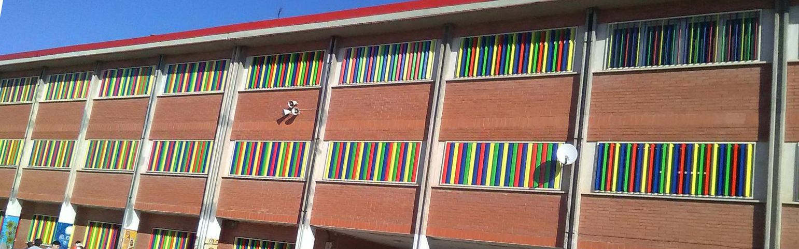
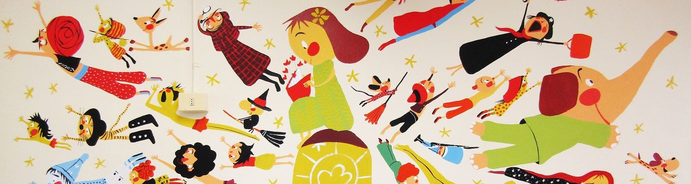

Catalana
El català és la llengua pròpia i vehicular d'ensenyament i aprenentatge. Plenament en català des de 1989.
Escola pública · Infantil i primària · Barberà del Vallès
Des de 1978 acompanyem infants de 3 a 12 anys a créixer curiosos, crítics i feliços. Una escola catalana, inclusiva i coeducadora on cada infant troba el seu cim.

L'escola
El nostre emblema són cinc cims que se superposen: com les anelles olímpiques, com els cinc continents. Diversos, però units en una mateixa serralada.
El català és la llengua pròpia i vehicular d'ensenyament i aprenentatge. Plenament en català des de 1989.
Respectem les diferents maneres de pensar i som oberts a tothom, sigui quin sigui el seu origen.
Eduquem per a la convivència i el respecte, sense cap discriminació per raó de sexe o d'orientació sexual.
Eduquem per la justícia, la solidaritat, la tolerància i la no-discriminació.
Cada infant és únic. Potenciem les capacitats i l'autoestima de tothom en una escola sense barreres arquitectòniques.
Aprenem a resoldre dificultats i a conèixer els drets i deures que comporta viure en comunitat.
Projecte educatiu
Projectes que fan que aprendre a Can Serra sigui investigar, llegir, crear, escoltar-se i fer comunitat.
Amb metodologia AICLE, experimentem, ens fem preguntes i ho expliquem en anglès. I cada juny ho ensenyem a tothom a la nostra fira de ciència.
El pla lector de l'escola, de I3 a 6è.
Materials per descobrir, manipular i formular hipòtesis com veritables científiques.
Cada setmana, una hora de tutoria en petit grup de 3 infants per escoltar-nos de veritat.
Expressió artística amb mirada feminista: descobrim les dones artistes que la història va oblidar, en xarxa amb l'Institut Can Planas.
Escola adherida al Pacte local per la coeducació de Barberà.
El francès com a segona llengua estrangera: bonjour, Can Serra!
Famílies, alumnat i mestres construïm l'escola plegats.
Protagonista de la setmana, jocs de pati i suma't als bons hàbits.
Delegades i delegats de cada classe donen veu a l'alumnat.
Nivells
Nou cursos, quatre etapes i un color per a cadascuna. Tria una parada del camí per descobrir-la.
Aprenem jugant, experimentant i fent-nos preguntes. Les Llunes i els Sols, els micos i les mones… cada grup té nom propi i cada infant és protagonista de la seva setmana.
Llegir, escriure i descobrir el món a través de projectes. Els llibres que llegim a classe prenen vida quan les autores i els autors ens visiten.
Projectes d'aula amb nom propi, Science en anglès i molta cultura popular: del Barberapitec als balls de bastons.
Autonomia, lideratge i ganes de fer el salt a la secundària. Els grans de l'escola apadrinen els petits i es preparen per al cim.
La nostra gegantona
Va néixer el curs 2010-11, durant una Setmana Cultural dedicada a la cultura popular, a partir de les històries i els dibuixos dels mateixos infants. El seu nom ve de l'Hostal La Farigola (1610), a l'entrada de Barberà.
Festes i tradicions
Inici de curs, full informatiu per a les famílies i reunions de presentació.
Castanyes, moniatos i panellets per donar la benvinguda a la tardor.
Cançons, tradicions i festa compartida abans de les vacances.
Disfresses i una setmana temàtica. D'una d'elles en va néixer la Farigoleta!
Jocs Florals, concurs de punts de llibre i la Festa de la Primavera.
Colònies al final de cada cicle: I5, 2n, 4t i 6è.
La fira de ciència i la Jornada de Danses Tradicionals omplen el pati.
Discursos, records, alguna llàgrima… i la Farigoleta vestida de gala.
L'estiu també es viu a Can Serra, amb l'AFA.
Llisca per veure tot el curs
Notícies
Amb la Farigoleta vestida de graduació, entre somriures, records i alguna llàgrima d'emoció, vam acomiadar una promoció que deixa una empremta ben especial.
Llegeix-laQuarta edició de la nostra fira de ciència, amb l'alumnat de 4t, 5è i 6è com a protagonista. Gràcies a tots els infants i als mestres de Science!
Llegeix-laDesprés de setmanes parlant dels animals, mirant contes i aprenent cançons, les Llunes i els Sols els van poder veure de veritat.
Llegeix-laCançons del Dinosaure Jou, psicojump i jocs de nit amb llanternes: ens vam convertir en paleontòlegs i paleontòlogues!
Llegeix-laEl pati s'omple de música, ritme i tradició: compartim les danses que hem treballat a música durant el trimestre.
Llegeix-laL'alumnat de 4t comparteix els balls de bastons amb la resta d'escoles de Barberà i Badia en una jornada de cultura popular.
Llegeix-laFamílies
Horaris d'atenció, serveis de l'AFA i documents de centre en un sol lloc.
Per a qualsevol qüestió, parla primer amb la tutora o el tutor. Si queden dubtes, demana entrevista amb direcció.

Espais
El curs 2018-19, l'il·lustrador Valentí Gubianas va pintar un mural a la nostra biblioteca i l'alumnat va votar per posar-li el seu nom.
Avui és un espai viu: biblioteca extraescolar gratuïta, Biblioteca Oberta amb narradores convidades, concursos de punts de llibre i el pla lector Totes i tots llegim!
Instal·lacions
Història
Cada fita és un cim. I el 2028 en farem 50.
16 mestres i Etelvina Salvador com a primera directora. El primer curs acaba amb 354 alumnes.
Neix l'emblema: cinc muntanyes que simbolitzen l'esperit cooperatiu.
El Consell Escolar aprova per unanimitat ser una escola plenament catalana.
Comença a funcionar el nivell de 3 anys.
Aula d'audiovisuals, música, idiomes, informàtica i teatre.
Escultura commemorativa de Ramon Cerezo i nou pati d'infantil.
Cinc muntanyes de colors: anelles olímpiques, cinc continents, una serralada.
Batejada amb pètals de rosa, balla per primer cop a les festes del poble.
Biblioteca Valentí Gubianas, menjador ampliat i cuina a l'escola.
La Farigoleta encapçala la inauguració popular del pont.
Mig segle de Can Serra. El proper cim el pugem junts.
Visita l'escola, coneix l'equip i descobreix els nostres espais i projectes. Publicarem les dates del curs 2027-28 aquí i a Dinantia.
Contacte